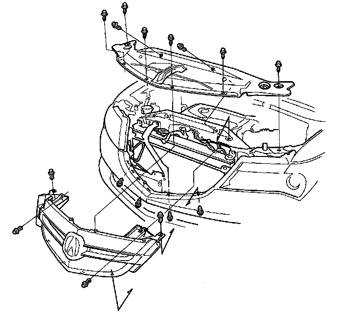
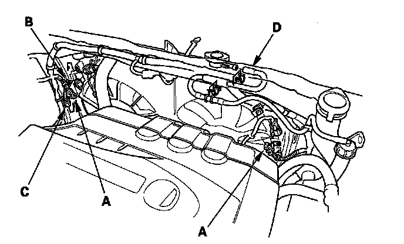
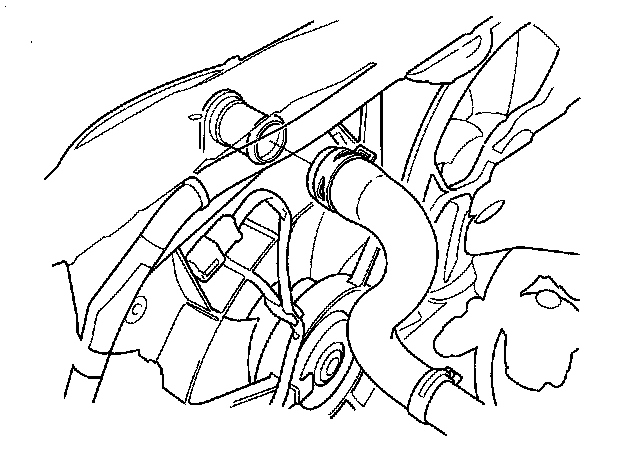
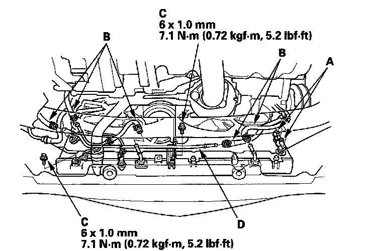
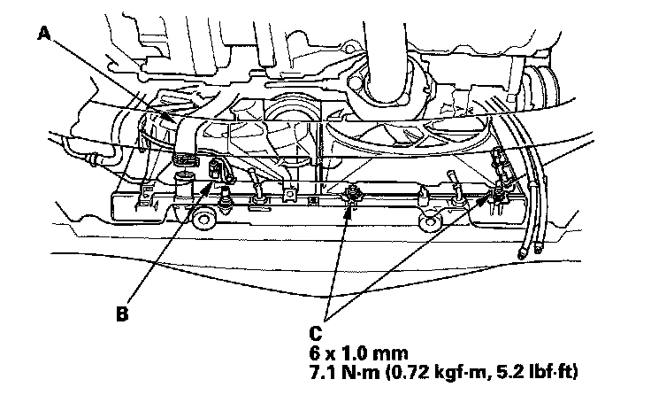
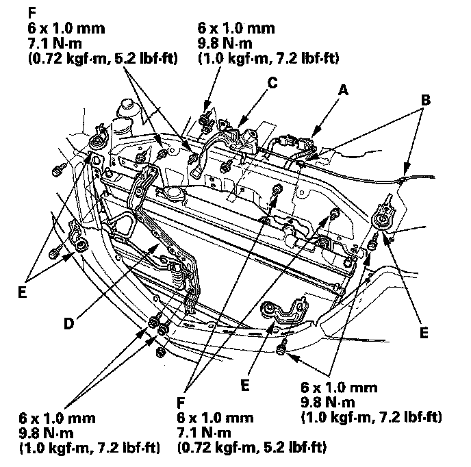
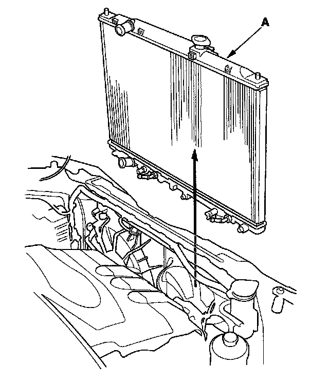

Radiator Cooling Fan: Service and Repair
Radiator and Fan ReplacementNOTE:
^ Use fender covers to avoid damaging painted surfaces.
^ To avoid damaging the wire and terminals, unplug the wiring connectors carefully while holding the connector portion.
^ Mark all wiring and hoses to avoid mis-connection. Also, be sure that they do not contact any other wiring or hoses, or interfere with any other parts.
1. Make sure you have the anti-theft codes for the audio system and navigation system (if equipped). Make sure the ignition switch is OFF.
2. Disconnect the negative cable from the battery first, then disconnect the positive cable.
3. Remove the battery and battery base.
4. Remove the air cleaner assembly.
5. Remove the front grille cover, then remove the front grille.

6. Disconnect the fan motor connectors (A), harness clamp (B), engine coolant temperature (ECT) sensor 2 subharness connector (C) and coolant reservoir hose (D).

7. Drain the engine coolant.
8. Remove the upper radiator hose.

9. Disconnect the hose clamps (A) and remove the ATF cooler hoses (B), then plug the line and hoses.

10. Remove the ATF cooler pipe mount bolts (C), then remove the ATF cooler pipe (D).
11. Remove the lower radiator hose (A) and disconnect the ECT sensor 2 connector (B) and loosen the two bolts (C).

12. Disconnect the hood latch switch connector (A), clamps (B), then remove the hood latch (C).

13. Remove the bulkhead bracket (D), and radiator and A/C condenser mount upper bracket/cushion (E), then remove the fan shroud mount bolts (F).
14. Displace the fan shrouds to the engine side, then pull up the radiator assembly (A).

15. Remove the fan shroud assembly.
16. Install the radiator and fans in the reverse order of removal.
17. Install the bulkhead bracket in the reverse order of removal. Apply body paint to the bulkhead bracket mounting bolts.
18. Set the upper and lower cushions securely.
19. Fill the radiator with engine coolant and bleed the air from the system.
20. Fill the transmission with ATF.
21. Adjust the engine hood latch.
22. Install the battery. Clean the battery posts and cable terminals with sandpaper, then assemble them and apply grease to prevent corrosion.
23. Do the steering column position memorization.
24. Enter the anti-theft codes for the audio system and navigation system (if equipped).
25. Set the clock.